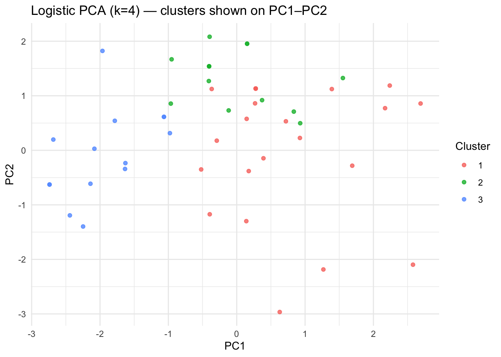
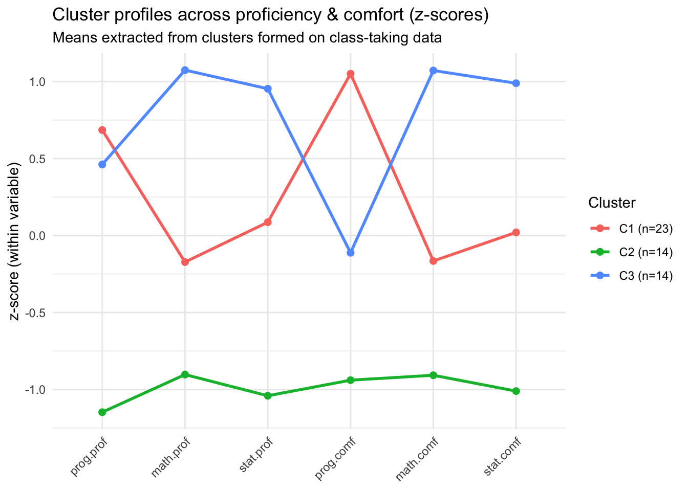
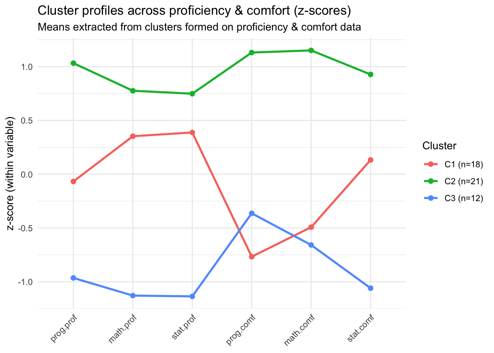

Analysis of class surveys
A Preliminary Exploration of Course Data and Self-Reported Proficiency
Introduction
This report presents an exploratory analysis of anonymized class survey data collected from PSTAT197A students.
The goal was to investigate whether students’ course-taking patterns — specifically, which upper-division classes they have completed — can reveal underlying proficiency and comfort levels in programming, mathematics, and statistics.
By applying data-reduction and clustering techniques, we aim to uncover whether objective indicators like coursework can approximate subjective self-assessments of skill.
Executive summary
We applied logistic PCA and k-means clustering to students’ course-taking patterns to explore whether the classes taken can serve as a proxy for self-reported proficiency and comfort levels. Although the results are not conclusive, the analysis revealed a meaningful structure: the clusters derived from course data align roughly with “beginner,” “intermediate,” and “advanced” groups. These clusters showed corresponding differences in reported proficiency and comfort means, suggesting that class enrollment patterns capture some of the same signal as self-assessments. While further statistical testing would be needed for definitive conclusions, the findings provide preliminary evidence that course-taking behavior may reflect underlying proficiency levels.
Data description
The data that we used was obtained from class survey data. Every student who chose to share their results was an entry in the dataset. Some samples questions they had to answer were their proficiency in statistics, math and CS as well as which upper division classes they have taken. Students were also surveyed on their preferred options on what they want to do on their capstone project as well as areas in data science they would want to explore. There were 59 responses in the dataset, so the size of the data is one limitation.
Questions of interest
We sought to understand whether students’ course-taking patterns could reveal underlying levels of proficiency and comfort, and whether those patterns might serve as a substitute for self-reports. Our analysis addressed three questions:
What kinds of student groupings (e.g., beginner, intermediate, advanced) emerge when clusters are formed based solely on classes taken?
To what extent do clusters based on classes taken resemble the patterns we see in students’ self-reported proficiency and comfort?
Can course-taking behavior be used in place of self-reports as a practical proxy for estimating students’ proficiency and comfort levels?
Findings
The logistic PCA reduced the course data into interpretable dimensions, and the k-means clustering produced three distinct groups, visualized in the PC1–PC2 plot.
Clusters are moderately separated, suggesting that course-taking behavior carries real structure among respondents.
The cluster summary table shows clear differences across groups:
Cluster 1 (n ≈ 23) had the highest comfort levels across most domains and intermediate-to-advanced self-reported proficiencies.
This group likely represents students with balanced experience and confidence — possibly “intermediate–advanced” learners.Cluster 2 (n ≈ 14) reported lower comfort and lower proficiencies overall.
This group aligns with “beginner” students who have taken fewer upper-division courses or are earlier in the major.Cluster 3 (n ≈ 14) tended to report high math and statistics comfort and proficiency, with somewhat lower programming confidence.
This cluster appears to represent more quantitatively oriented students — “advanced” in math/statistics, but moderate in programming.
The z-score line plots reinforce this interpretation.
The first plot (based on class-taking data) shows clear divergence among clusters, especially in programming comfort and statistical proficiency.
The second plot (based on proficiency and comfort directly) reveals similar patterns, suggesting that the clusters derived from course-taking correspond well to the self-reported measures.
Together, these results suggest that students’ completed coursework provides a meaningful, though imperfect, signal of their comfort and skill levels.
This alignment supports the idea that objective educational data (like class history) can partially substitute for subjective self-assessments in understanding student preparedness.
| Cluster | Cluster Size | prog.prof | math.prof | stat.prof | prog.comf | math.comf | stat.comf |
|---|---|---|---|---|---|---|---|
| 1 | 23 | 2.48 | 2.39 | 2.61 | 4.09 | 4.00 | 4.04 |
| 2 | 14 | 2.07 | 2.29 | 2.29 | 3.57 | 3.79 | 3.79 |
| 3 | 14 | 2.43 | 2.57 | 2.86 | 3.79 | 4.36 | 4.29 |


Conclusion
Our analysis finds that course-taking data alone can reproduce recognizable groupings that correspond to self-reported proficiency and comfort levels.
Clusters based solely on which classes students have taken align broadly with beginner, intermediate, and advanced patterns.
While the relationships are not perfect, they demonstrate that course history captures underlying differences in experience and confidence.
This insight may inform advising or curriculum design, as instructors could identify students’ likely comfort zones based on their coursework patterns.
Limitations and Next Steps
While informative, this analysis is preliminary and exploratory:
- Sample size is modest (≈ 59 responses), which limits generalizability.
- No formal significance testing was applied; differences are descriptive, not inferential.
- Potential bias exists if the respondents differ systematically from the full student population.
- Temporal effects (e.g., course recency or year in program) were not modeled but may influence results.
Future work could incorporate additional variables such as student year, GPA, or time since each course, and apply more formal validation (e.g., cross-validation or stability analysis).
Expanding the dataset and comparing results across sections or years would also strengthen conclusions.